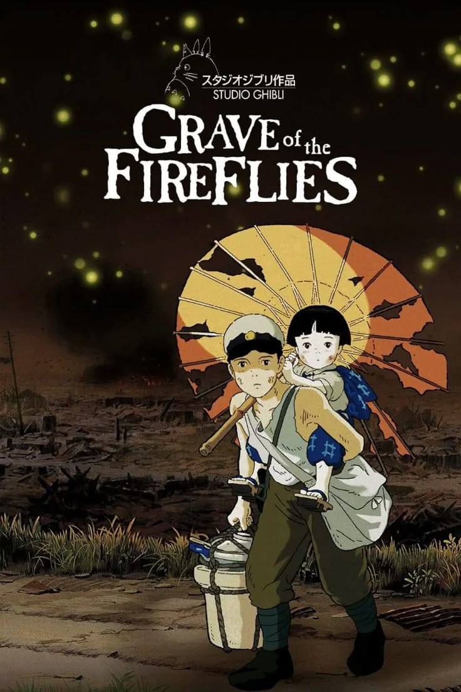

🎭 GÉNERO: DRAMA 🎭
Historias intensas que muestran emociones, conflictos y experiencias de los personajes.




Historias intensas que muestran emociones, conflictos y experiencias de los personajes.
